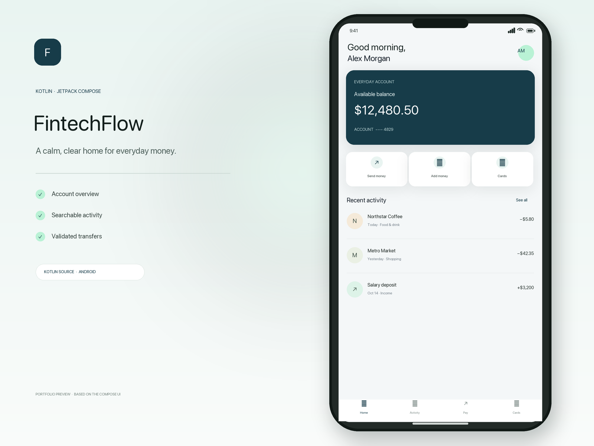
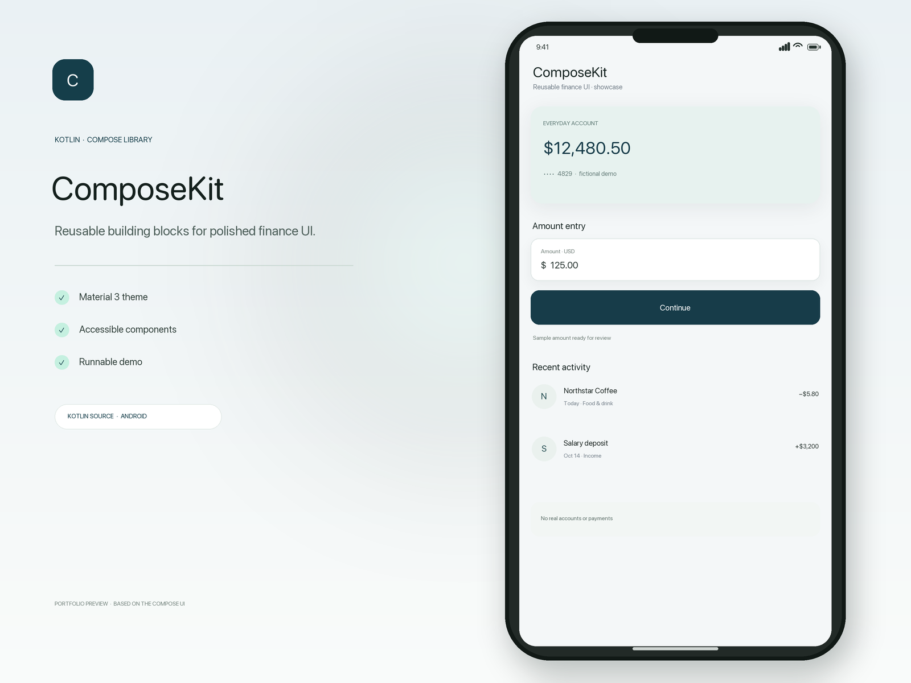
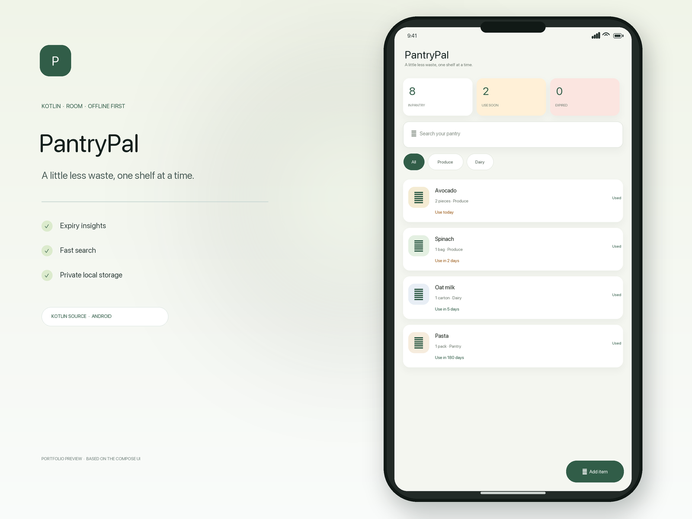

FintechFlow
↗Personal finance dashboard demo built with Android and Kotlin.
Kotlin · AndroidExplore repository ↗
I’m Prem Singh. I work across Kotlin, Android, and mobile architecture, with a focus on fintech, digital banking, and mentoring.
Explore my work ↓GitHub ↗
Personal finance dashboard demo built with Android and Kotlin.
Kotlin · Android
Reusable Jetpack Compose components for finance interfaces.
Jetpack Compose · UI library
A habit companion exploring shared Compose Multiplatform UI.
Kotlin Multiplatform · Compose
An Android demo for pantry organization and meal planning.
Android · KotlinPortfolio apps and demonstrations. Screenshots show sample interfaces, not client work.
My professional focus brings together Android engineering, mobile architecture, fintech, and digital banking. I care about clear structure, considered interfaces, and practical technical decisions.
Alongside building, I value mentoring and sharing what I learn with the mobile engineering community.
Connect about Android engineering, Kotlin, or a thoughtful technical challenge.